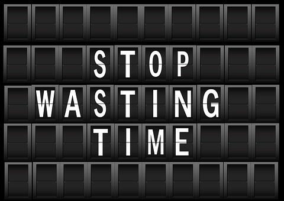

Module 2: Organization and Management of Resources
2.1 The Why and How of Organizational Strategies and Skills
In this section you are going to explore...
- Organization for Students
- Organizational Skills
Importance of Organization for Students
After working diligently on a project, you don’t want to get a failing grade because you couldn’t find your work when it was due because you were disorganized. Not only does organization keep you on track so that you can earn the grades you deserve, but it also prepares you for the working world, where organizational skills are a requirement in many jobs. If you start practicing effective organizational skills early in high school, you’ll do much better in college and be fully prepared for a successful career.
- Keep Up
In school, information comes at you at increasingly faster speeds. With the explosion of social media, 24-hour news cycles with seemingly relentless scientific and technological breakthroughs, entirely new fields of study for you and access to more information than ever, you’ve got to be able to organize the content to filter out what you need to retain and what you can discard. To keep up with the flow of information you’ll receive in school, you need to develop a file system in your computer that allows easy access to your research as well as hard-copy folders to separate and file papers, articles and assignments.
- Recognize Relevance
Effective organization helps you in a number of ways. It allows you to collect information and put it in order according to its relevance. If you’re scattered and unorganized, it’s difficult to piece together information in a useful way for papers and studying. You’ll be able to compare notes, group information in terms of its relevance for each class you’re taking and classify your priorities more effectively when you develop order to your schoolwork.
- Save Time
Time is valuable, especially if you’re a full-time student with a job. Time spent looking for research you’ve already compiled or pulling together your notes taken from

various classes is time you can’t afford to lose. Take a few moments each day to place papers and documents in appropriate files to save those precious minutes or hours you spend looking for them otherwise. Keep your room in order so it’s easier to find your books, notes, clothes and sporting gear. Invest in a desk organizer to keep mail, bills and notices so you don’t waste time sorting the same stuff over and over.- Don’t Miss Anything
Disorganization can lead to missed deadlines, late charges and lost opportunities. Keep lists of exams and appointments on your phone or laptop to help you organize your affairs to ensure you complete vital tasks in the order of importance. Your desk organizer will help you keep up with bills and notices so you don’t miss due dates. Plan your days and check off tasks once they’ve been completed so you don’t forget to finish important projects.
Your High School Get-It-Together Guide
This is your time to shine — so polish up your organizational skills. Try these tips for keeping track of your schedule, your stuff, and your grades:
- Set up a Command Center
This is a place where you and your family plan all of the activities of the household. A family calendar and schedule with appointments, meal planning, travel, and chores should be located in this area. The center should have supplies (pens), a communication board, and notes that are color-coded by task or person. Be sure a hanging file folder, organizational box, or notebook containing important documents is nearby. This is also the place to hang a weekly printout of grades posted online. Meet with your family once a week and give your input.
- Create a Staging Area
This should be a spot near where you Enter and Exit the House. Open cubbies/shelving and baskets and/or hooks will help you keep and remember items. This is home to your books, homework, backpack, notes, sports bag, keys, lunches, and other school-related articles. Hanging a large communication board will help you remember tasks and items. Consider placing a power strip in this area, so you can charge a phone, an iPad, or other electronic devices. An alarm clock or timer will help get you out the door on time.
- Practice a Last-Minute Drill
After you are packed and ready to go, stop and do a mental checklist before going out the door. Take three breaths, talk through the mental to-do list, visualize where you are going to put things, and make mental associations for books, keys, and assignments. Take one last scan of the area before passing through the door. You might find it helpful to write reminder messages on shower doors and mirrors for when you first wake up. For example, "I am being picked up early this morning -- not as much time to get ready."
- Remember Assignments at School
After each class, or when at your locker, check with a friend or your smartphone or technology reminder system about assignments. Post a calendar/planner page in your locker or notebook (if lockers aren't available). One strategy is to keep a sheet in each subject notebook on which to record daily assignments. Inventory your notebook and decide what materials you will need to pack; keep individual folders (or extra-large envelopes) for each subject, if you find it difficult to deal with notebooks.
- Plan Your Homework
If you don't know where you are going, how will you know if you have arrived? Before you begin your studies, fill out a homework-planning sheet.
- Know where you Stand
Print out your online grades on Thursdays. On Friday, gather materials and talk with your teachers about completing assignments over the weekend. Sunday is a good day to make a plan of action for the coming week.
- Keep Important Papers and Numbers at Your Fingertips
Tired of chasing down the information you need? Create an organized "chaser file" or notebook. This is where you keep important papers that you need in a hurry, as well as a list of contact numbers, codes, resources, and classmates in each class whom you can call if you get stuck on an assignment.
- Create a “Planner”
Because of the increased academic demands of high school, your brain can't hold all the directions teachers give you throughout the day. You need a planner. Some planners are too bulky and are not ADD-friendly. Tear out blank pages from your notebook or create a planner on the computer. Use color-coding and boldfacing to highlight information.
- Set Up Your Notebook Your Way
Some students like an accordion file system better than a tabbed divider system for their notebook. Talk with your teacher about how you would like to organize your notebook and explain to her why it works with your learning style. Try heavy-gauge notebook paper with reinforced holes, so that important information doesn't fall out. Use clear slip-sleeves for papers that will stay in your notebook for the whole year.
- Stockpile Supplies
Always have extras on hand when you run out of supplies at midnight, when office supply stores are closed.
- Get Geeky
Use apps, smartphones, computers, and tablets to your advantage. Ask for classroom accommodation if the school does not allow such devices in class. To stay on top of things, set alarms and reminder messages, or send yourself an email, copying the people who will hold you accountable to finish a task.
Watch the following video about how to organize your school supplies.
How to be Organized for School, College or Life - The 6 Habits of Highly Organized People
Organizational Skills
Organizational skills are some of the most important and transferable job skills you can acquire. They encompass a set of capabilities that help a person to plan, prioritize, and achieve your goals. The ability to keep work organized allows you to focus on different projects without getting disoriented or lost, thereby increasing productivity and efficiency in school.
Why Organizational Skills Are Important
Staying organized in your school can save you time and money. Organizational skills are essential for multitasking and keeping everything running smoothly and successfully. Post-secondary schools, as well as employers, aim to recruit applicants who can work to achieve results consistently, even when unforeseen delays or problems arise. Students with strong organization skills are able to structure their schedule, boost productivity, and prioritize tasks that must be completed immediately versus those that can be postponed, delegated to another person, or eliminated altogether.